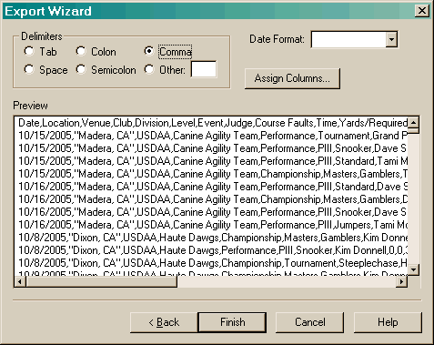

When exporting data, there are a number of items that must be configured.

The format of the date must be specified. This makes sure the date is in a format that can be accepted by whatever program will be using this data.
The delimiters section allows you to designate the character that separates the various fields in the output. Note, this section will be hidden when exporting to Microsoft Excel or OpenOffice Calc.
The Assign Columns button allows you to specify the actual order of the fields in the data.
When exporting data, any fields that consist of multiple lines will be flattened. This is done specifically because Microsoft Excel and OpenOffice Calc cannot properly import the data otherwise. In addition, quotes will be added as necessary to make sure the data is exported properly.